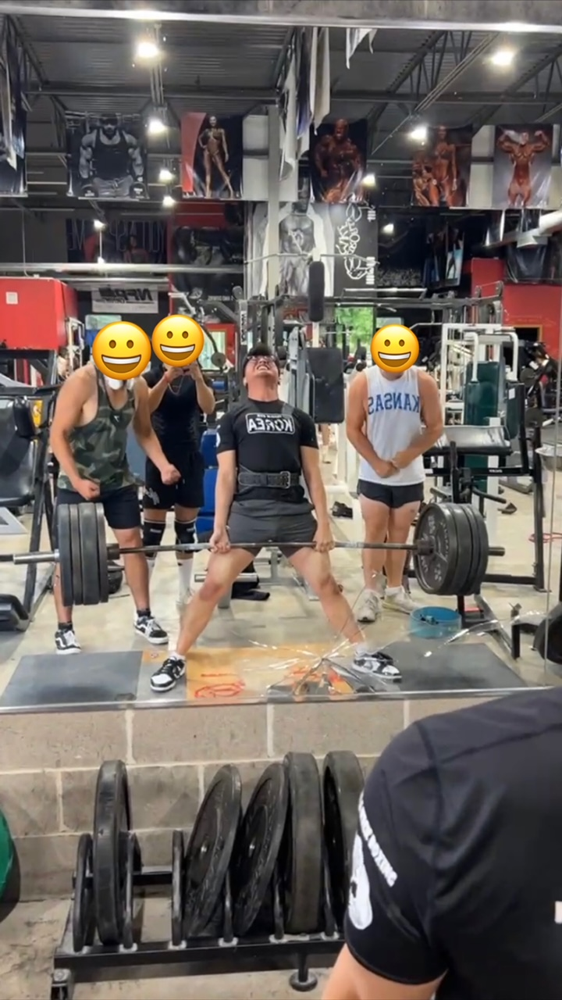

Getting too caught up in goals: While making goals can be a good thing, they have also led me to get down on myself at times. Despite eating healthily, training abs, and exercising consistently, I haven't achieved the aesthetic six-pack abs I desired. I realized that I have strong core strength and that genetics play a role in abs definition. It's important to recognize your achievements even if you don't reach your intended goal.
Don't compare yourself to others: Your fitness journey is unique. Progression rates vary for everyone due to individual strengths and weaknesses. Judgments or criticisms from others are often reflections of their insecurities. Focus on your own journey and celebrate your personal achievements.
Don't overwork yourself: In the pursuit of improvement, it's possible to train too much. Overtraining can lead to injuries and exhaustion, affecting your ability to perform other activities. It's crucial to rest and avoid pushing your body beyond its limits.
